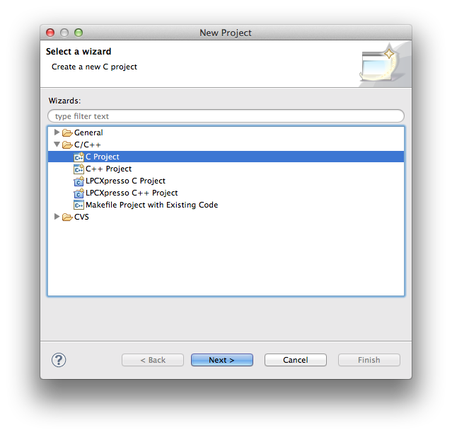

前期にやったはずの Hello, World! に LPCXpresso で再度アタックしてみる。

バイナリを作成するとき完全に無視される。
プログラムを読むヒトの役に立つことを書いておくと読むヒトはうれしい。
#include の右に示されるファイルのコピーをその場所にペーストしろという命令。
ファイル名が < > で囲まれる場合、 ファイルはフォルダ /usr/include の下を探す。
ファイル名が " " で囲まれる場合、 ファイルはそのプログラム(今の場合、hello_world.c) がセーブされるフォルダ(同じく hello_world) の下を探す。
#include と < > の間にはスペース文字を一つ以上入れるのがプログラムのルール。
/usr/include/stdlib.h と/usr/include/stdlib.h ファイルを探してみよ。
int main(void) は引き続く{...} の部分に書かれる(「定義される」と言うと格調高い) コンピュータへの命令群に名前 main をつける。
int main(void)は 「外部から void データを受け取って {...} の命令を実行する。」の意味。 void は「無効」の意味で、 "I have no girl friends." の no の用法に近い。 実際には外部データを受け取らずに {...} の命令の実行を開始する。
int main(void) は {...} に定義される命令を実行した結果、なにかしら int 型のデータが関数 main を呼び出したモノに戻されるであろうという予告。
{...} は基本的に上から下へ順番に一つずつ命令が実行される。 命令はセミコロン(;)までがひとまとまりの命令文になる。 セミコロンを打ち忘れるとコンピュータは命令文の区切りがわからなくなる。 例えば、
1;は正しいＣの文(なにを意味するのかは今は問わない)。
1+2;も正しいＣの文。
1 + 2;としても意味は上のプログラムと変わらない。しかし、
1; +; 2;は意味が違うし、エラーにもなる。次もセミコロンが見当たらないので、底抜け (文の終わりがみつからない)エラーになってしまう。
1 + 2
左波括弧にいちばん近い右波括弧までをひとまとまりとする。
複数の命令文をひとつにまとめるときに使う。
C言語には、{ } に囲まれる文が一文だけのときは { } を省略できる特別ルールがあるにはあるが、 情報処理応用の受講生はこの特別ルールを 忘れろ。使うとろくなことがない。
{ } の後のセミコロン(;)は大抵の場合、あってもなくても同じだが 無害と思ってつけまくると思わぬところで失敗する。 { } の後ろにセミコロンはありえない とひとまず覚えておく。
int main(void)
{
char name[32];
printf("your name?\n");
scanf("%s",name);
printf("nice to meet you, %s\n",name);
return 0;
}
| { } 内の5つの文をまとめて関数 main と名前をつける。 関数定義のときは { および } を独立した行の先頭に書こうぜ。 |
while (1==1) {
LED(1);
}
| 1==1 の間(つまり、いつまでも、無限に)、LED(1)を呼び出す。 |
while (1==1)
{
LED(1);
}
| { } の位置が違ってもプログラムの意味は変わらない。でも、 情報処理応用ではこのスタイルはやめよーぜ。 |
int i;
i=0;
while (1==1) {
LED(i%2);
Wait(1000);
i+=1;
}
| 1==1 の間、{ } 中の3つの命令を繰り返す。 LED(i%2)はiが偶数の時LED(0)、iが奇数のときLED(1)を呼び出す。 { } に含まれる3つ目の文、 i +=1; で i の値はループの度に１ずつ大きくなる。 ループの外側には変数 i を使うための準備(宣言と初期化)が見える。 |
int i;
i=0;
while (i < 100) {
LED(i%2);
Wait(1000);
i+=1;
}
| 変数iの値が100未満の間、{ }を繰り返す。 |
int i;
i=0;
while (i < 100); {
LED(i%2);
Wait(1000);
i+=1;
}
| よく見るまちがい。ビルドはエラーにならないが、 決してプログラマーが考えたようには動かない。 上のプログラムとの違いを見つけられますか? |
int i;
i=0;
while (1==1) {
LED(i%2);
Wait(1000);
i+=1;
if (i > 100) {
break;
}
}
| if は ( ) が真の時、{ } を実行する。 break は自分を含む最も内側のループから脱出する。 if は後日、もう一度詳しい説明がある。 |
puts(...)は ... の部分の文字列をターミナル上に表示する命令。 命令文となるためには最後（右端）にセミコロンが必要であったことを思い出せ。
return ... は ... の部分のモノを関数の戻り値として、呼び出し側に戻す命令。 命令文となるためには最後（右端）にセミコロンが必要であったことを思い出せ。
{...} の中で return に出会うと、それより後の命令は捨てられる。